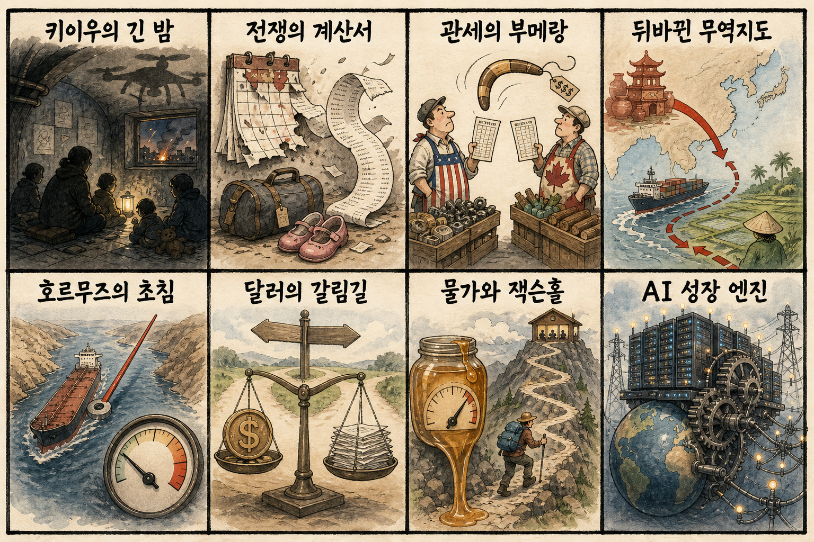
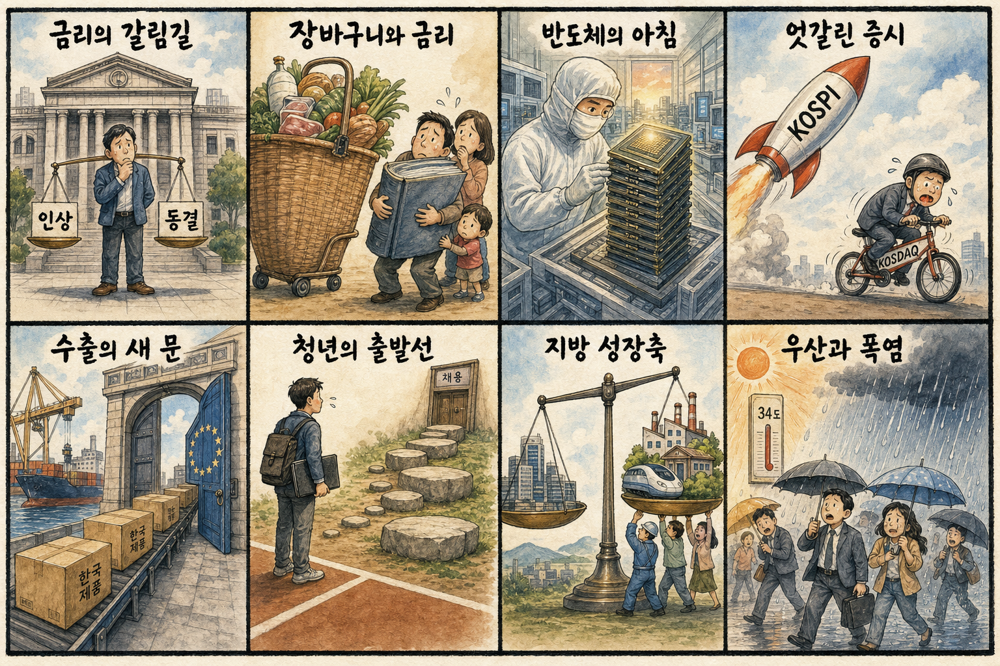

01
팔란티어 · 170.42→177.50달러 · +4.15%
내용요약 데이터 분석 소프트웨어 선호 속 시가 대비 4.15% 상승했습니다.
예상여파 AI 소프트웨어 수요 기대를 지지하지만 고밸류에이션 종목의 변동성은 계속 경계해야 합니다.
MORNING_BRIEFING_20260827
작성 시각: 2026-08-27 06:38 KST · 직전 미국 정규장과 2026-08-27 KST 당일 공개 기사 기준
직전 미국 정규장인 8월 26일에는 다우 -0.21%, S&P 500 -0.02%, 나스닥 -0.08%로 3대 지수가 약보합 마감했습니다. 엔비디아 실적을 앞둔 관망 속 엔비디아는 시가 대비 -1.30%였지만 AMD +1.24%, 마이크론 +1.37%로 반도체 안에서도 차별화됐습니다. 장 마감 뒤 보도된 엔비디아 매출 서프라이즈는 국내 HBM 심리에 우호적이지만, 미국 물가·잭슨홀 경계와 결과 발표 뒤 차익실현 가능성을 함께 봐야 합니다.
| 지수 | 종가 | 등락률 | 한국 증시 시사점 |
|---|---|---|---|
| 다우존스 | 53,463.88 | -0.21% | 경기·금리 경계 |
| S&P 500 | 7,675.70 | -0.02% | 기술주 관망 |
| 나스닥 종합 | 26,130.20 | -0.08% | 기술주 관망 |
다우 -0.21%, S&P 500 -0.02%, 나스닥 -0.08%였습니다.
2분기 매출 962억달러 서프라이즈 보도가 HBM 심리를 지지합니다.
오늘 기준금리 결정과 총재 발언이 국내 자산 가격의 핵심입니다.
이벤트 직후 갭 위험으로 검증 문턱을 통과한 후보가 없습니다.
8월 26일 보고서는 검증 문턱을 통과한 후보가 없어 공식 추천을 내지 않았습니다. 게시 당시 판단은 그대로 유지되며 사후 종목을 추가하지 않습니다.
| 시장 | 종가 | 등락률 | 해석 |
|---|---|---|---|
| KOSPI | 6,808.21 | +0.97% | 26일 시가 대비 +1.20% |
| KOSDAQ | 826.87 | -0.03% | 26일 시가 대비 +0.25% |
| 다우존스 | 53,463.88 | -0.21% | 경기·금리 경계 |
| S&P 500 | 7,675.70 | -0.02% | 기술주 관망 |
| 나스닥 종합 | 26,130.20 | -0.08% | 기술주 관망 |
팔란티어 +4.15%, 크라우드스트라이크 +3.52%였습니다.
마이크론 +1.37%, AMD +1.24%, 인텔 +1.63%였습니다.
메타 -2.42%, 알파벳 -1.33%였습니다.
실적 발표 전 엔비디아는 시가 대비 -1.30%였습니다.
내용요약 데이터 분석 소프트웨어 선호 속 시가 대비 4.15% 상승했습니다.
예상여파 AI 소프트웨어 수요 기대를 지지하지만 고밸류에이션 종목의 변동성은 계속 경계해야 합니다.
내용요약 사이버보안주 매수세로 시가 대비 3.52% 상승했습니다.
예상여파 국내 보안 소프트웨어에도 심리상 우호적이지만 계약 성장과 수익성 확인이 우선입니다.
내용요약 대형 플랫폼 가운데 시가 대비 2.42% 하락해 상대 약세였습니다.
예상여파 광고 플랫폼의 AI 투자비 부담과 밸류에이션 차별화가 국내 인터넷주에도 영향을 줄 수 있습니다.
내용요약 대형 소프트웨어주 선호 속 시가 대비 1.75% 상승했습니다.
예상여파 현금흐름이 확인되는 AI 플랫폼으로 자금이 몰리면 국내 소프트웨어도 실적 가시성이 중요해집니다.
내용요약 실적 발표 전 관망으로 시가 대비 1.30% 하락했습니다.
예상여파 장 마감 뒤 실적은 HBM 심리를 지지하지만 결과 발표 뒤 차익실현과 갭 변동성을 경계해야 합니다.
엔비디아의 매출 서프라이즈 보도와 AMD·마이크론의 상대 강세는 국내 HBM·반도체 심리에 긍정적입니다. 다만 미국 정규장은 약보합이었고 전일 국내 KOSPI는 시가 대비 +1.20% 상승한 반면 KOSDAQ은 +0.25%에 그쳐 대형주 쏠림이 있었습니다. 오늘 금통위와 엔비디아 실적 해석이 겹치므로 개장 초 반도체 갭 상승을 추격하기보다 외국인 현물 수급, 원화 반응, 삼성전자·SK하이닉스의 시초가 유지 여부를 먼저 확인합니다.
오늘은 추천 없음 — 현금 관망
엔비디아 실적 발표 직후 갭 변동성과 금통위 이벤트가 겹쳤고, 전일까지의 외국인·기관 수급, 컨센서스 변화, 30건 이상 유사 조건 확률 보정, 예상 손익비 1.5 이상을 동시에 검증한 종목이 없습니다. 종합점수와 상승확률을 임의로 만들지 않습니다.
관심 연결종목 HBM·AI칩·데이터센터 전력은 뉴스 연결 관찰 대상일 뿐 매수 추천이 아닙니다. 실적 발표 뒤 장전 급등 종목은 추격매수 금지이며 개장 후 수급 확인 전 진입을 피합니다.
매출 서프라이즈보다 가이던스와 장후 주가 반응을 봅니다.
기준금리 결정과 총재의 물가·환율 발언을 확인합니다.
반도체 갭 상승이 현물 매수로 이어지는지 봅니다.
국지성 강우와 높은 습도, 전력수요를 함께 점검합니다.
핵심 요약: 엔비디아 실적 서프라이즈와 오픈AI 자체 칩, HBM4 맞춤형 설계가 AI칩 경쟁을 넓히고 있습니다. 동시에 데이터센터 전력 효율과 AI의 일자리·분배 안전장치가 기술 산업의 다음 핵심 의제로 부상했습니다.
내용요약 AI 데이터센터 전력난이 커지면서 AMD와 엔비디아가 연산 성능뿐 아니라 에너지 효율을 핵심 경쟁축으로 내세운다는 보도입니다.
예상여파 칩당 전력 효율 개선은 데이터센터 운영비를 낮추지만 실제 전력망·냉각 설비 투자는 계속 확대될 가능성이 큽니다.
내용요약 엔비디아가 2분기 매출 962억달러로 시장 기대를 웃돌며 AI칩 수요의 견조함을 보여줬다는 당일 보도입니다.
예상여파 HBM·첨단패키징 수요를 지지하지만 이미 높아진 기대와 발표 뒤 차익실현이 국내 반도체 변동성을 키울 수 있습니다.
내용요약 오픈AI가 개발 중인 자체 칩의 일부 성능이 엔비디아 GPU를 웃돌았다는 보도입니다.
예상여파 빅테크의 맞춤형 칩 경쟁은 설계·파운드리 선택지를 넓히지만 범용 GPU 생태계를 대체할지는 양산성과 소프트웨어가 관건입니다.
내용요약 차세대 AI칩의 HBM4 탑재 구성이 8개와 12개로 갈리면서 삼성전자와 SK하이닉스가 맞춤형 메모리 대응을 강화한다는 기사입니다.
예상여파 고객별 사양 다변화는 HBM 단가와 기술 경쟁을 높이지만 수율·인증 일정에 따라 공급사별 실적 반영 속도가 달라질 수 있습니다.
내용요약 빌 게이츠가 AI 격동기에 인간전용 영역과 로봇세 같은 사회적 안전장치를 제안했다는 보도입니다.
예상여파 AI 생산성의 이익 배분과 일자리 전환 비용을 둘러싼 정책 논의가 빨라지고 기술기업의 책임 범위도 넓어질 수 있습니다.
핵심 요약: 우크라이나 수도 공습으로 전쟁 위험이 다시 커졌고 미국·캐나다의 관세 맞대응은 북미 공급망을 압박합니다. 호르무즈 협상 기대는 유가를 낮췄지만 끈적한 미국 물가와 잭슨홀 경계는 달러와 금리에 부담을 남겼습니다.
내용요약 러시아가 우크라이나 수도 키이우를 고강도로 공습해 최소 16명이 숨졌다는 당일 보도입니다.
예상여파 민간 피해와 피란이 늘고 종전 협상 기대가 약해지면 유럽 안보비용과 에너지·곡물 위험 프리미엄이 다시 커질 수 있습니다.
내용요약 캐나다가 미국의 경합주를 겨냥해 품목별 고관세를 설계했다는 보도입니다.
예상여파 정치 일정과 연결된 관세 맞대응은 북미 공급망의 비용과 불확실성을 높여 자동차·철강·소비재 기업의 조달 전략에 영향을 줄 수 있습니다.
내용요약 미국의 관세정책 이후 대미 무역흑자국 순위에서 베트남이 중국을 제치고 1위로 올라섰다는 분석입니다.
예상여파 생산기지 우회와 공급망 재편이 빨라지면서 동남아 투자 수요가 늘 수 있지만 우회수출 규제도 강화될 수 있습니다.
내용요약 호르무즈 해협 관련 협상을 주시하는 가운데 국제유가가 3거래일 연속 하락했다는 보도입니다.
예상여파 에너지 수입국의 물가 부담에는 우호적이지만 협상이 흔들리면 운송·보험료와 유가가 빠르게 반등할 수 있습니다.
내용요약 미국의 끈적한 물가와 내수 호조, 잭슨홀을 앞둔 경계로 주식·채권이 함께 약세이고 달러는 강세였다는 시장 보도입니다.
예상여파 금리 인하 기대가 후퇴하면 성장주 밸류에이션과 신흥국 통화에 부담이 되고 원화 변동성도 커질 수 있습니다.

핵심 요약: 오늘 한국은행의 기준금리 결정이 금융시장과 가계 부담의 핵심입니다. 지역 성장축과 발전공기업 본사 유치, 중소기업의 유럽 수출, 청년 고용 진입장벽, 비와 폭염이 국내 주요 생활·경제 이슈입니다.
내용요약 한국은행이 7월에 이어 기준금리를 다시 올릴지 동결할지 결정하는 금융통화위원회를 오늘 연다는 보도입니다.
예상여파 금리 결정과 총재 발언은 원화·채권·은행주뿐 아니라 가계대출과 부동산 심리에 직접 영향을 줄 수 있습니다.
내용요약 경남도가 발전공기업 통합본사 유치를 통해 약 3000억원과 5년의 비용을 아낄 수 있다는 논리로 진주 유치전에 나섰다는 기사입니다.
예상여파 본사 입지는 지역 고용과 협력업체 생태계에 영향을 주지만 통합 방식과 정부의 최종 배치 원칙이 핵심 변수입니다.
내용요약 충남 기업들이 유럽 시장개척에서 1738만달러 상담과 785만달러 수출계약 성과를 냈다는 보도입니다.
예상여파 중소기업의 유럽 판로가 넓어질 수 있으나 환율과 인증·물류 비용을 관리해 실제 매출로 연결하는 과정이 중요합니다.
내용요약 청년에게 입직 전부터 완성된 역량을 요구하는 노동시장의 관행을 짚은 칼럼입니다.
예상여파 채용의 진입장벽을 낮추고 직무교육을 확대하면 청년 고용의 미스매치를 완화할 수 있지만 기업의 훈련 투자도 필요합니다.
내용요약 전국에 비와 소나기가 내리고 낮 최고기온은 34도까지 오를 수 있다는 오늘 아침 기상 보도입니다.
예상여파 출근길 국지성 강우와 침수에 대비하는 동시에 높은 습도와 폭염에 따른 온열질환·전력수요도 관리해야 합니다.
